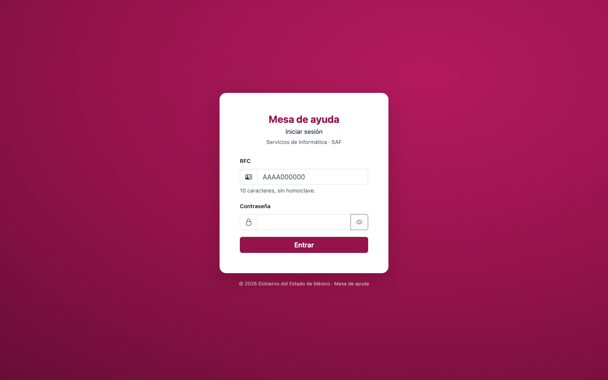
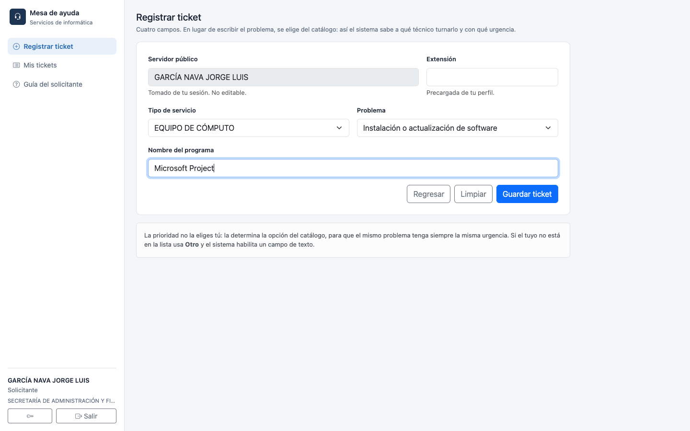
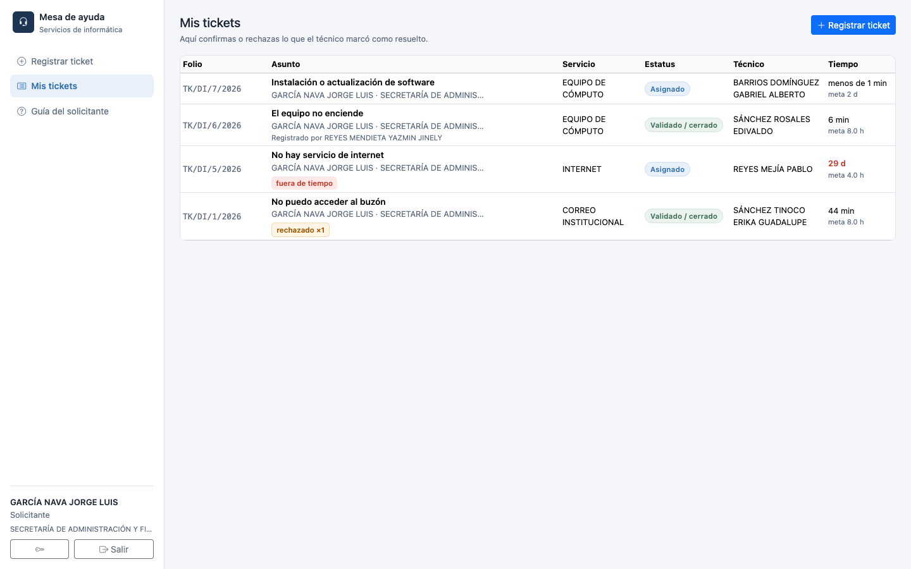
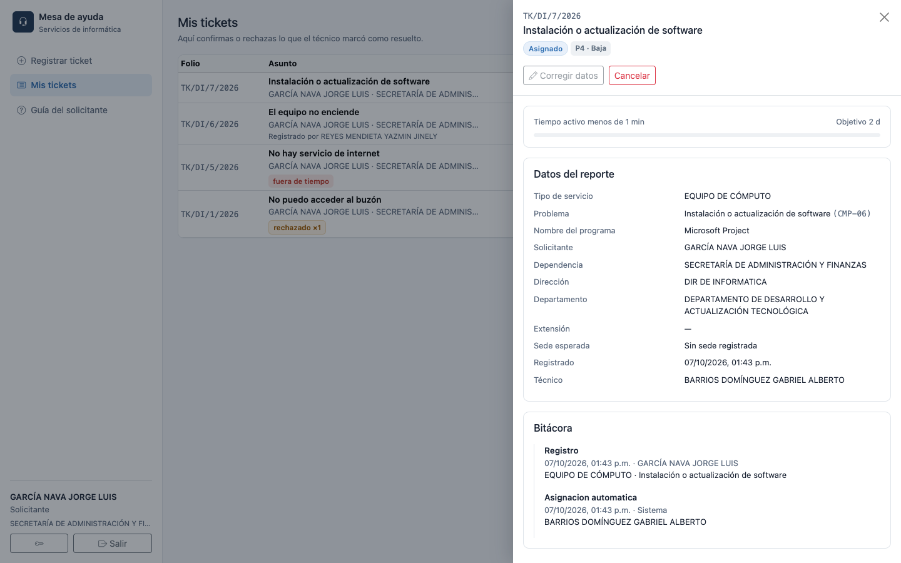
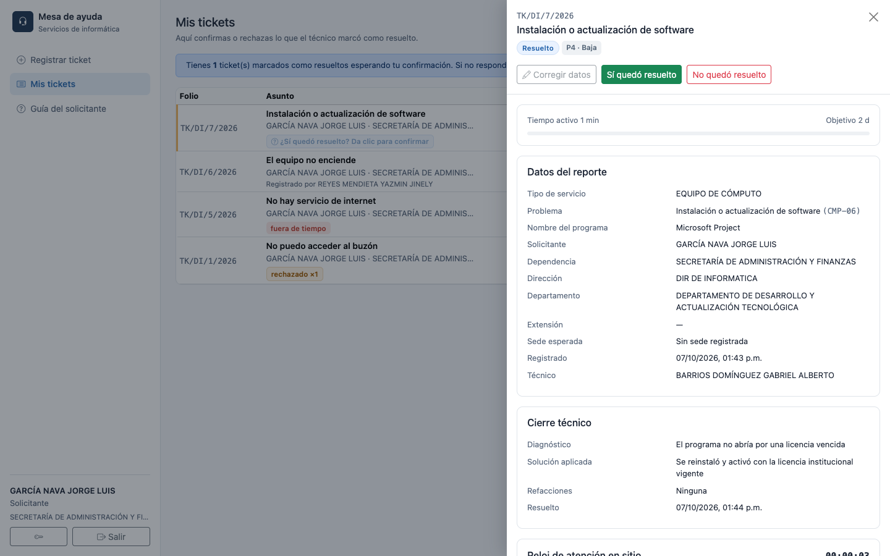
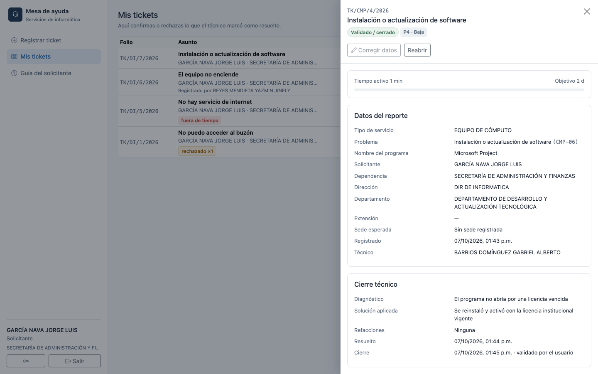

Secretaría de Administración y Finanzas · Congreso del Estado de México
Contenido
Entrar al sistema
Registrar un ticket
Dar seguimiento a tus tickets
Cuando el técnico marca tu ticket como resuelto
Preguntas frecuentes
SOLICITANTE
1 Entrar al sistema
El acceso es con tu RFC y la contraseña institucional — la misma que usas en los demás sistemas del Congreso.

Pantalla de inicio de sesión. Captura tu RFC (10 caracteres, sin homoclave) y tu contraseña.
Si no puedes entrar
Verifica que tu RFC no incluya la homoclave y que la contraseña sea la institucional vigente. Si el problema sigue, contacta al área de informática — no hay una opción de "recuperar contraseña" dentro del propio sistema.
2 Registrar un ticket
El formulario es corto a propósito: en vez de escribir libremente el problema, lo eliges de un catálogo. Así el sistema sabe automáticamente a qué técnico turnarlo y con qué urgencia — tú no decides la prioridad.
En el menú lateral entra a Registrar ticket.
Tu nombre ya aparece precargado (viene de tu sesión, no es editable) y la extensión telefónica se sugiere a partir de tu perfil — puedes corregirla si es necesario.
Elige el Tipo de servicio (por ejemplo, Equipo de cómputo, Internet, Correo institucional, Impresoras arrendadas…).
Elige el Problema específico de la lista — las opciones cambian según el servicio elegido.
Dependiendo del problema, el sistema pide un dato adicional (por ejemplo el número de inventario del equipo, el nombre del programa a instalar, o cuántos equipos afecta la falla).
Si tu problema no aparece en la lista, usa la opción Otro: el sistema habilita un campo de texto libre.
Da clic en Guardar ticket.

Ejemplo: servicio EQUIPO DE CÓMPUTO, problema Instalación o actualización de software, con el nombre del programa capturado.
Por qué no eliges tú la prioridad
La urgencia (P1 a P4) la determina la opción del catálogo que elegiste, para que el mismo tipo de problema tenga siempre la misma urgencia, sin importar quién lo reporte. Esto también define el tiempo objetivo de atención y a qué técnico se turna automáticamente.
3 Dar seguimiento a tus tickets
Todo lo que has reportado queda en Mis tickets, con su estatus actual.

«Mis tickets»: aquí ves el folio, el asunto y el estatus de cada reporte que has hecho.
Da clic en cualquier renglón para abrir el detalle completo: datos del reporte, a qué técnico se asignó, tiempo transcurrido contra el objetivo, y la bitácora de todo lo que ha pasado con el ticket.

Detalle del ticket: datos del reporte y bitácora de movimientos.
Dos folios, un mismo ticket
Vas a ver dos números de folio en tus tickets:
Folio general (formato TK/DI/N/año) — se asigna desde que registras el ticket y nunca cambia. Es tu referencia fija.
Folio — mientras el ticket está abierto es el mismo que el folio general; cuando se cierra de verdad (lo confirmas tú, o pasan 3 días sin que respondas), cambia al folio específico del servicio (por ejemplo TK/CMP/12/2026 para Equipo de cómputo).
4 Cuando el técnico marca tu ticket como resuelto
El ticket no se cierra solo porque el técnico diga que terminó: te toca confirmar a ti.

Cuando el técnico marca el ticket como resuelto, aparecen dos botones: Sí quedó resuelto y No quedó resuelto.
Si el problema de verdad se resolvió, da clic en Sí quedó resuelto. El ticket pasa a Validado / cerrado y en ese momento se le asigna su folio definitivo de servicio.
Si el problema sigue, da clic en No quedó resuelto y describe por qué — el ticket se reabre y regresa al técnico.

Ticket ya validado y cerrado, con su folio definitivo de servicio.
¿Y si no respondo?
Si no confirmas ni rechazas dentro de 3 días naturales después de que el técnico lo marcó como resuelto, el sistema lo cierra automáticamente ("cierre por omisión"). El folio definitivo se asigna igual, solo que la bitácora queda marcada como que no hubo confirmación tuya.
5 Preguntas frecuentes
¿Puedo registrar un ticket a nombre de otra persona?
No, como solicitante siempre registras a tu propio nombre. Esa opción solo existe para administrador, operador y gestor.
¿Por qué no puedo elegir al técnico?
La asignación es automática: el sistema turna el ticket al técnico de esa especialidad con menos carga de trabajo en ese momento, para repartir el trabajo de forma justa.
¿Qué pasa si cancelo un ticket?
Un ticket cancelado no recibe folio de servicio — mantiene únicamente su folio general. Solo puede cancelarlo quien lo registró o el administrador.
¿Dónde veo cuánto tiempo lleva mi ticket?
En el detalle del ticket aparece "Tiempo activo" contra el objetivo de atención de esa prioridad. El tiempo que el ticket pasa "en espera" (por ejemplo, esperando una refacción) no cuenta en tu contra ni en contra del técnico.